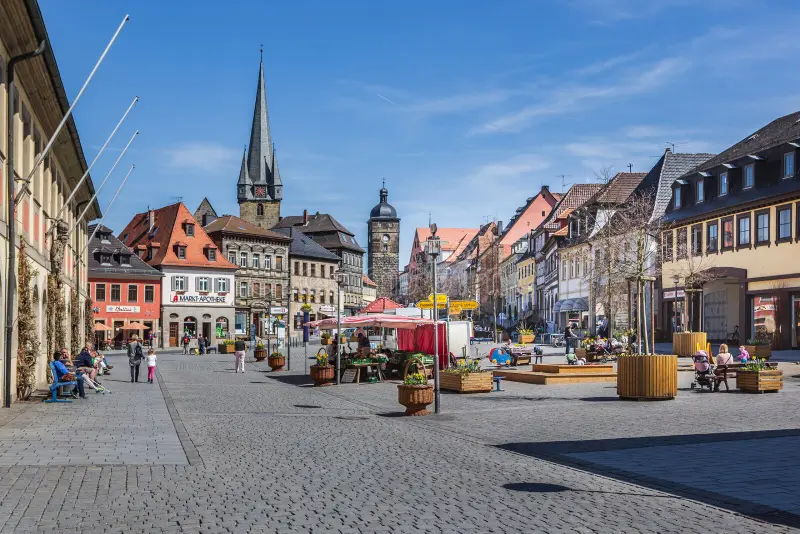
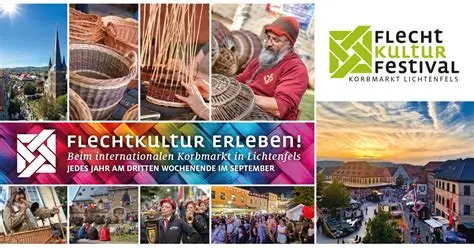
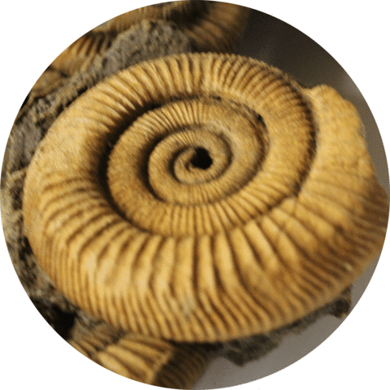
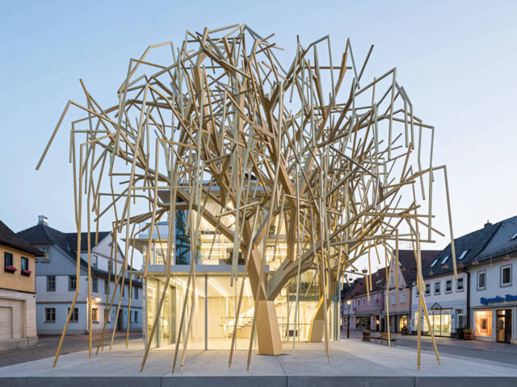
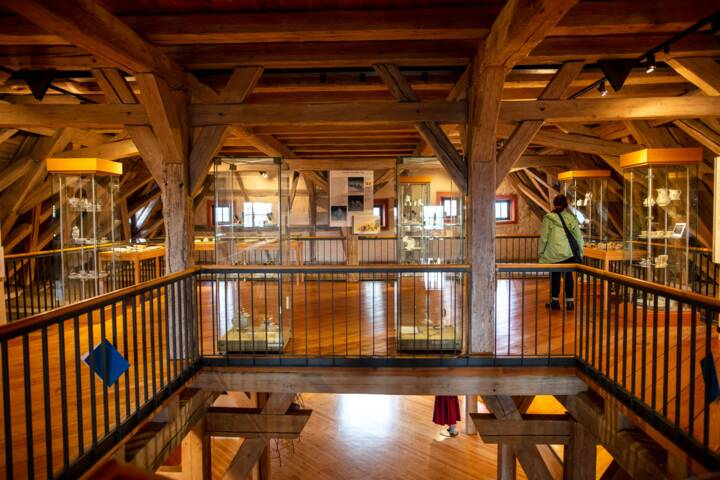

Marktplatz Lichtenfels

Der Marktplatz in Lichtenfels ist nicht nur ein zentraler Ort für die Stadt, sondern auch ein historisch bedeutendes Gebiet. Die archäologischen Grabungen auf dem Marktplatz 2 haben die Spuren der Vergangenheit der Stadt Lichtenfels aufgedeckt, darunter Tierknochen, Glasflaschen und alte Keramikscherben. Diese Funde stammen aus der mittelalterlichen Bebauung und zeigen die lange Geschichte der Stadt, die bis in die Altsteinzeit zurückreicht.
Marktplatz, 96215 LichtenfelsKorbmarkt

Jedes Jahr am dritten Wochenende im September steht der berühmte Lichtenfelser Korbmarkt fest im Veranstaltungskalender der Stadt Lichtenfels. Weitere Informationen über den Korbmarkt finden Sie unter:
www.korbmarkt.deMuseen

Heimatmuseum
- Das Heimatmuseum Klosterlangheim besteht seit 1982. Der sehr aktive Verein der Heimatfreunde Klosterlangheim hatte beschlossen,
zum 850jährigen Jubiläum der Klostergründung ein Museum einzurichten.
- Adresse: Abt-Mösiger-Straße 4, 96215 Lichtenfels

Fossilien des Jura
- Die Stadt Lichtenfels hat die Sammlung „Fossilien des Jura“ im Jahr 1980 erworben. Diese Fossilien wurden über Jahrzehnte hinweg
mit großer Sachkenntnis von Herrn Waldemar Backert gesammelt und präpariert.
- Hausanschrift: Oberer Torturm Marktplatz 42, 96215 Lichtenfels

Das "Archiv der Zukunft"
- Der spektakuläre Bau soll ein Zeichen für die Veränderung in Lichtenfels sein. Die Weide, das Symbol der Korbflechterei, wurde in eine 3D-Struktur verwandelt
und bildet eine Brücke in die Zukunft.
- Hausanschrift: Oberer Torturm Marktplatz 42, 96215 Lichtenfels

Das "Ausstellungen im Stadtschloss"
- Neben der Ausstellung „7 Salix und 7 Plejaden“, sind auch die Städtischen Sammlungen im Stadtschloss zu besichtigen.
-
Adresse: Stadtknechtsgasse 5 · 96215 Lichtenfels